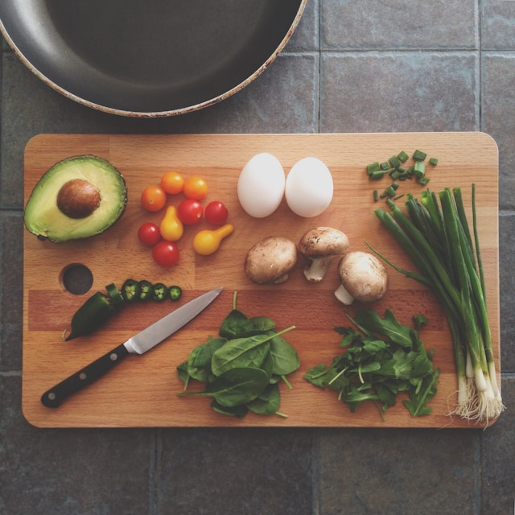

Cooking is one of the best ways to bring people together, and every great meal starts with a great recipe. This website is a collection of some of my favorite homemade recipes that are simple, delicious, and perfect for any occasion.
Whether you’re in the mood for a classic Brazilian brigadeiro, a soft and flavorful banana bread, or a homemade pizza, you’ll find easy-to-follow instructions and ingredient lists to help you create something amazing.